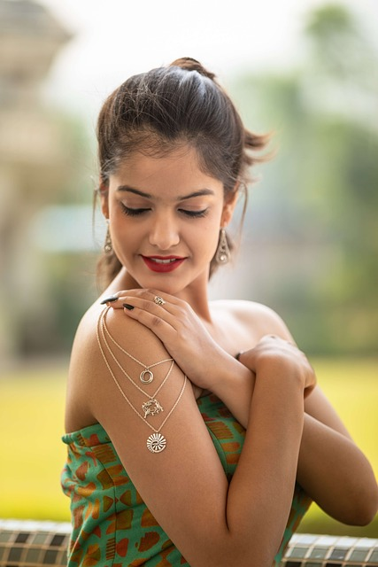

Since its founding, Maganeluxe has quickly established itself as a prominent player in the luxury jewelry market. The company began as a small family-owned business, driven by a passion for fine jewelry and a desire to make sophisticated designs accessible to a wider audience. Through dedication and a commitment to quality, Maganeluxe has grown into a trusted name, offering everything from engagement rings to statement pieces.
The team at Maganeluxe is composed of skilled designers, artisans, and experts in customer service, all of whom share a deep appreciation for artistry and quality. With a focus on creativity, sustainability, and customer satisfaction, the company continuously pushes the boundaries of design, ensuring every piece reflects the brand’s core values. Maganeluxe's success can be attributed to the collaborative spirit and expertise of its talented team, each contributing to the brand's ongoing evolution. 
VISION
we aim to provide timeless elegance and exceptional craftsmanship. We specialize in creating jewelry that speaks to both the heart and the soul, blending exquisite design with quality materials that stand the test of time. Our goal is to inspire confidence and joy in every person who wears our creations, by offering them a piece of jewelry that represents their unique story and personal style.
We strive to be a beacon of excellence in the jewelry industry, combining traditional techniques with modern innovations to ensure that each item is crafted to perfection. Our commitment to sourcing only the finest gemstones and precious metals reflects our dedication to delivering a truly luxurious experience. We are passionate about sustainability and responsible sourcing, ensuring that every piece we create is as ethical as it is beautiful.
At Maganelux, we understand that jewelry is not just an accessory—it's an expression of individuality, a symbol of love, and a cherished legacy. Our vision is to build long-lasting relationships with our customers by providing exceptional customer service, personalized attention, and a seamless shopping experience, whether in-store or online.
MISSION
At Maganelux, our mission is to create exquisite, high-quality jewelry that empowers individuals to express their unique personalities and celebrate life’s most cherished moments. We are dedicated to crafting timeless pieces that not only captivate with their beauty but also reflect our commitment to superior craftsmanship, ethical sourcing, and sustainability.
We aim to provide an exceptional customer experience by offering personalized service, expert guidance, and a seamless journey from selection to purchase. Whether through our in-store presence or online platform, our goal is to make every customer feel valued, ensuring they find jewelry that resonates with their style and emotions.
Through innovation and dedication to quality, we seek to continually elevate the jewelry experience, pushing boundaries in design while remaining rooted in our values of trust, integrity, and sustainability. At Maganelux, we aspire to become a globally recognized brand synonymous with elegance, luxury, and responsibility, bringing people closer to the meaningful moments that define their lives.